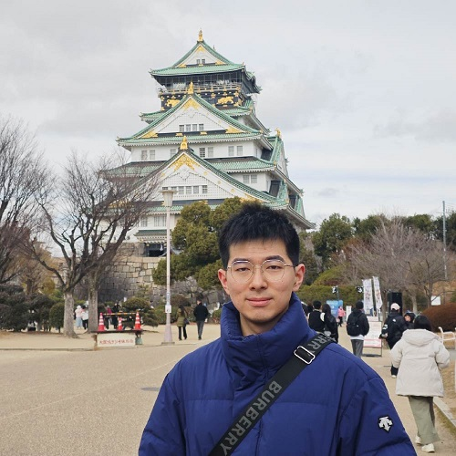

Biography

I am a PhD student in Fluid Mechanics at the School of Aerospace Engineering, Beijing Institute of Technology, where I work with Professor Shaohua Chen.
My research lies at the intersection of computational fluid dynamics and fluid–structure interaction. I am particularly interested in immersed-boundary lattice Boltzmann methods (IB-LBM), vortex dynamics, and the interaction between flexible structures and surrounding flows.
My recent studies investigate the oscillatory boundary layer over wall-mounted flexible filaments and fluid transport generated by flexible blades performing impulsive metachronal rowing. I also contribute to the development of FSILBM3D, an open-source three-dimensional fluid–structure interaction solver based on IB-LBM.
Facebook | Instagram | Google Scholar | ResearchGate | GitHub
Research Interests
- Immersed-boundary lattice Boltzmann methods and numerical methods for fluid–structure interaction.
- Vortex dynamics and oscillatory boundary layers over flexible filaments.
- Bio-inspired flows, flexible propulsion, and fluid transport by coordinated flexible structures.
Research Experience
Fluid–Structure Interaction and Bio-Inspired Flows
My research uses numerical simulations to examine how structural flexibility affects flow structures and fluid transport. In one line of work, I studied the oscillatory boundary layer over wall-mounted flexible filaments. In another, I investigated fluid transport produced by flexible blades performing impulsive metachronal rowing. These studies aim to clarify the fluid–structure interaction mechanisms underlying flexible-body flows.
Development of FSILBM3D
I contribute to FSILBM3D, an open-source three-dimensional fluid–structure interaction solver developed using the immersed-boundary lattice Boltzmann method. My work has included solver architecture and parallel implementation, as well as the development of the solid-structure solver. This work combines numerical-method development with high-performance scientific computing.
Education
- 2022–present: PhD student in Fluid Mechanics, School of Aerospace Engineering, Beijing Institute of Technology. Advisor: Professor Shaohua Chen.
- 2018–2022: B.Eng. in Engineering Mechanics, College of Aerospace and Civil Engineering, Harbin Engineering University.
Selected Publications
- Xiong, Y.-H., Gao, A.-K., Lu, X.-Y., and Chen, S. “Fluid transport by flexible blades performing impulsive metachronal rowing.” Physical Review Fluids, 11, 054103 (2026).
- Xiong, Y.-H., Gao, A.-K., Lu, X.-Y., and Chen, S. “Numerical study of the oscillatory boundary layer over wall-mounted flexible filaments.” Physical Review Fluids, 9, 124101 (2024).
Contact
Yu-Hang Xiong
Department of Mechanics, School of Aerospace Engineering
Beijing Institute of Technology, Beijing 100081, China
Email: 3120226047@bit.edu.cn